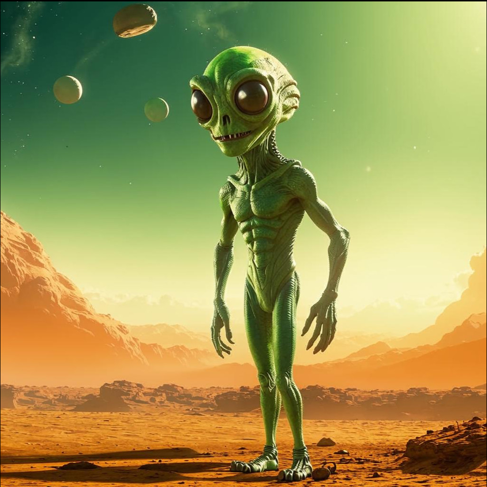
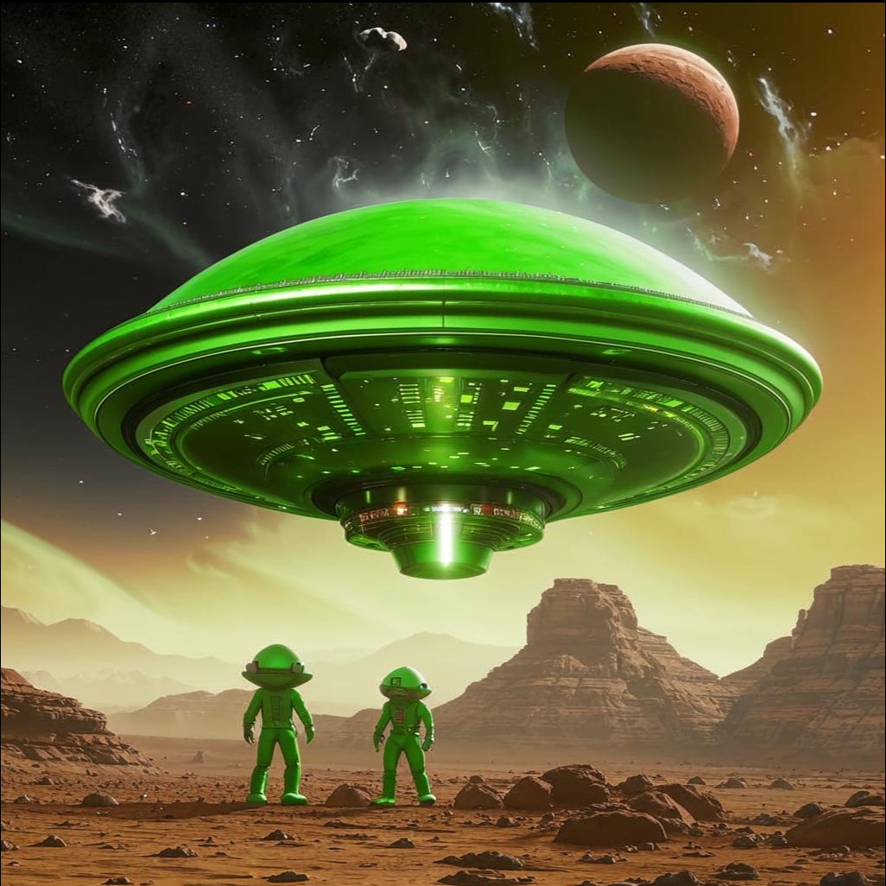
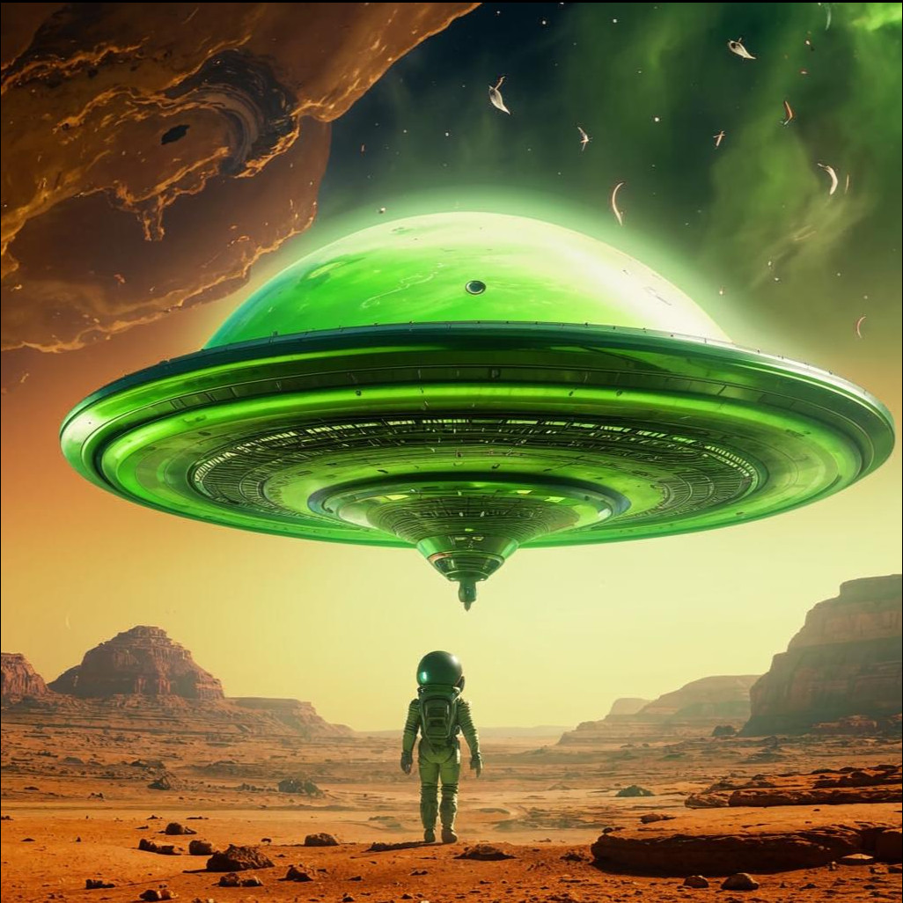

Загадочные обитатели далеких миров: миф или реальность?
Вопрос о существовании инопланетян давно будоражит воображение человечества. Идея того, что мы можем быть не единственными живыми существами во Вселенной, вызывает интерес ученых, философов и простых людей. Несмотря на отсутствие убедительных доказательств, тема остается актуальной и изучается различными научными дисциплинами.
Научная основа
Современная наука допускает вероятность существования инопланетных цивилизаций. Основанием служат следующие факторы:
Огромное количество галактик и звездных систем, каждая из которых потенциально способна содержать планеты, подходящие для зарождения жизни.
Обнаружение экзопланет, схожих по условиям с Землей, увеличивает шансы обнаружения живых организмов.
Развитие технологий позволяет проводить наблюдения и эксперименты, направленные на обнаружение признаков жизни за пределами нашей Солнечной системы.
Однако следует отметить, что даже несмотря на теоретические предпосылки, реальные доказательства существования инопланетян отсутствуют.
Популярность темы
Популяризация идеи инопланетян началась в XX веке вместе с развитием научной фантастики и кинематографа. Фильмы, сериалы и литература сформировали образы пришельцев, многие из которых стали частью массовой культуры. Эти образы варьируются от дружелюбных гуманоидов до агрессивных захватчиков.
Опасности и перспективы контакта
Контакт с инопланетной цивилизацией мог бы иметь как положительные, так и отрицательные последствия. К положительным аспектам относятся обмен знаниями, технологиями и культурными достижениями. Однако существуют риски: возможные конфликты, заболевания и технологическое превосходство инопланетян могли бы поставить человеческую цивилизацию под угрозу.
Таким образом, тема инопланетян продолжает оставаться предметом научных исследований и общественных дискуссий, вызывая восхищение и тревогу одновременно.
Летающие тарелки, известные также как НЛО (неопознанные летательные объекты), давно стали предметом споров и обсуждений среди ученых, энтузиастов и широкой общественности. Несмотря на многочисленные свидетельства очевидцев и различные фотографии, достоверность существования такого транспорта остается загадкой.
Многие ученые считают, что большинство наблюдений НЛО объясняется природными явлениями, ошибками восприятия или техническими средствами землян. Однако некоторые случаи остаются необъясненными даже после тщательного анализа экспертами.
Гипотезы о внеземном происхождении летающих тарелок основаны на предположении, что высокоразвитые цивилизации способны создавать технологии, позволяющие преодолевать огромные расстояния между звездами. Если такие аппараты действительно существуют, они могли бы обладать передовыми двигателями, позволяющими перемещаться быстрее света или обходить ограничения классической физики.
Интерес к этому феномену подогревается благодаря кинематографу и литературе, создающим образ таинственных и мощных аппаратов пришельцев. Возможно, однажды человечество сможет разгадать тайну летающих тарелок и приблизится к пониманию технологий далеких цивилизаций.
Однако пока официальная наука склоняется к мнению, что доказательства существования НЛО недостаточны для однозначных выводов. Исследование космоса продолжается, и возможно, будущие открытия позволят нам лучше понять природу этих явлений.
 